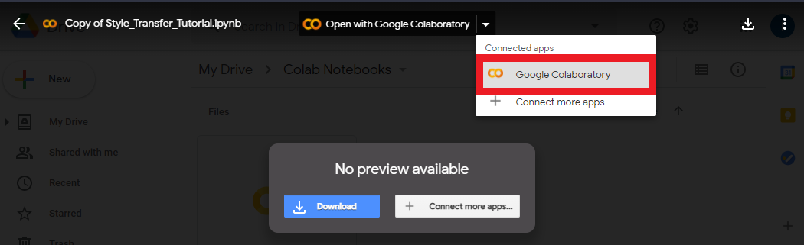
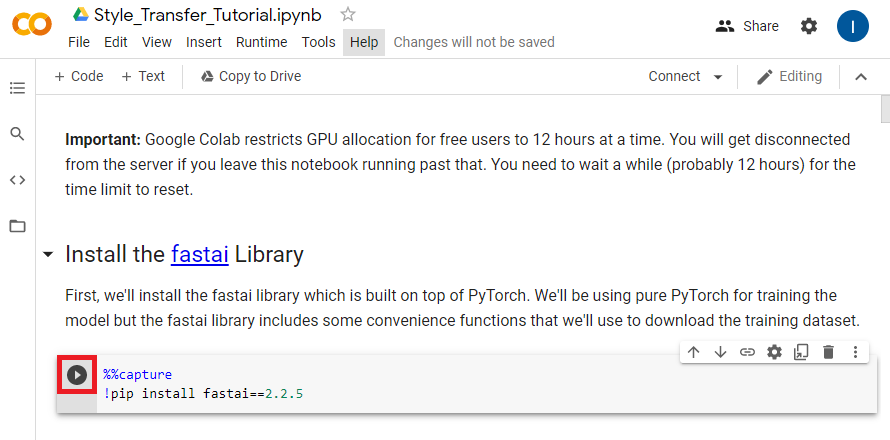
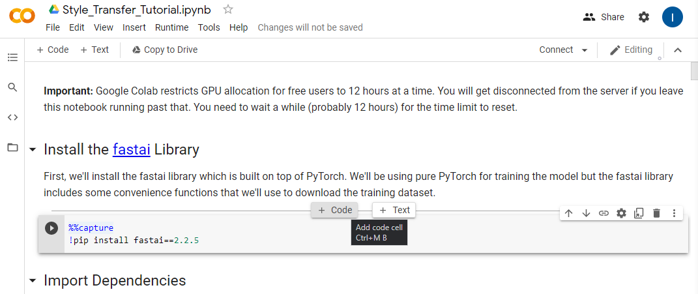
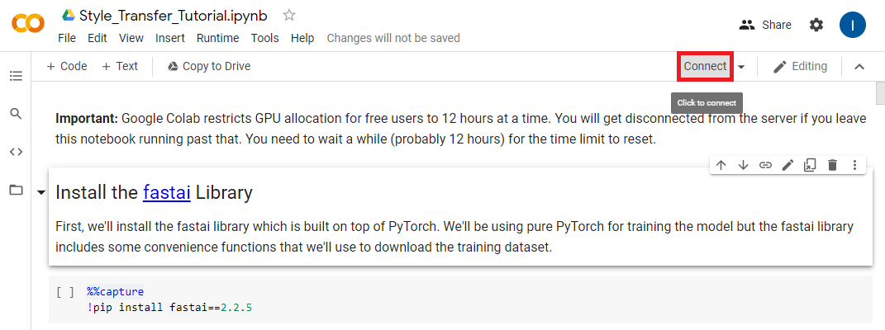
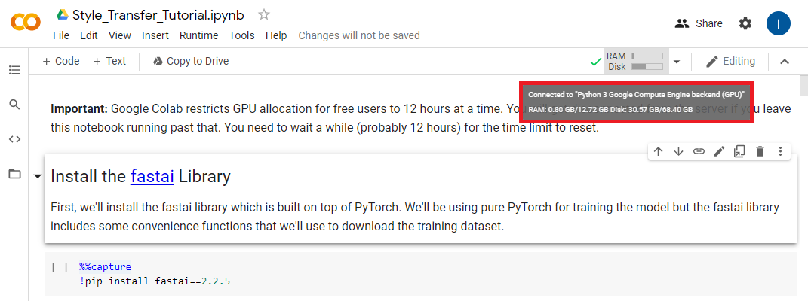
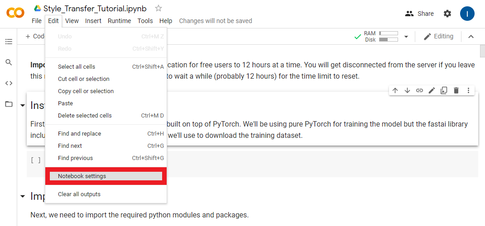
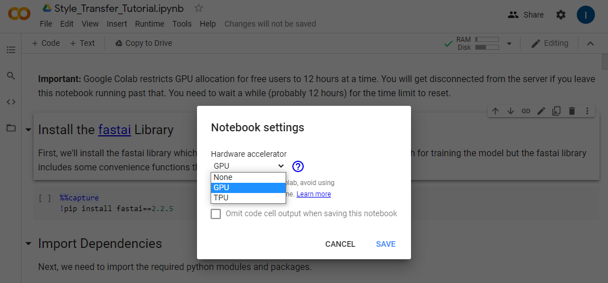

End-to-End In-Game Style Transfer Tutorial Pt.2
Previous: Part 1 Part 1.5
Introduction
In this post we’ll be using the free tier of Google Colab to train a style transfer model. Google Colab provides a virtual environment that allows anyone to write and execute arbitrary python code in their browser. This removes the need to setup a Python environment on your local machine. It also provides free access to GPUs.
Important: Google Colab restricts GPU allocation for free users to 12 hours at a time. You will get disconnected from the server if you leave a notebook running past that. You need to wait a while (probably 12 hours) for the time limit to reset.
Open Google Colab Notebook
First, you need to get your own copy of the Colab Notebook. You can open my copy of the notebook by clicking the link below.
Copy to Google Drive
You need to save the notebook to your Google Drive since you can’t make changes to my copy. To do so, click the Copy to Drive button.
That will reopen the notebook in a new tab where any changes you make can be saved to you Google Drive. Go ahead and close the original tab. The notebook should autosave progress, but you can manually save by pressing CTRL-s.
Colab Notebooks Folder
If you open your Google Drive, you should see a new folder named Colab Notebooks. This is where any notebooks your work on in Google Colab will be saved.
Inside Colab Notebooks Folder
You can open the new folder to see your copy of the notebook. If you double-click on the notebook file, you’ll be presented with the option to open it in a Google Colab environment. You can use this method to reopen the notebook in the future.

Using a Colab Notebook
Colab Notebooks are primarily made up of code cells and text cells. Code cells can be executed in multiple ways. If you hover over or click on a code cell, a play button will appear on the left side of the cell. Clicking the play button will execute the code cell.

The other main ways are to either press CTRL-Enter or Shift-Enter. CTRL-Enter executes the code cell in place while Shift-Enter executes the code cell and moves to the next cell.
You can add more cells by hovering over either the top or bottom of an existing cell. You will be presented with the option to create either a code or text cell.

Connect to a Runtime Environment
We need to connect to a runtime environment before we start using the notebook. Press the Connect button outlined below.

Once the notebook has connected to a runtime environment hover the RAM/Disk readout and make sure the notebook is using a GPU backend.

If it’s not, you need to manually set it to use a GPU. You can do so by opening the Notebook Settings under the Edit section.

Select GPU from the Hardware Accelerator dropdown and click Save.

Continue in the Notebook
I recommend continuing this post in the Colab notebook itself. However, I have also included the notebook contents below if you’re only reading through the tutorial.
Install the fastai Library
First, we’ll install the fastai library which is built on top of PyTorch. We’ll be using pure PyTorch for training the model but the fastai library includes some convenience functions that we’ll use to download the training dataset.
%%capture
!pip install fastai==2.2.5Import Dependencies
Next, we need to import the required python modules and packages.
# Miscellaneous operating system interfaces
# https://docs.python.org/3/library/os.html
import os
# Time access and conversions
# https://docs.python.org/3/library/time.html
import time
# Object-oriented filesystem paths
# https://docs.python.org/3/library/pathlib.html#pathlib.Path
from pathlib import Path
# Tuple-like objects that have named fields
# https://docs.python.org/3/library/collections.html#collections.namedtuple
from collections import namedtuple
# A convenience function for downloading files from a url to a destination folder
# https://docs.fast.ai/data.external.html#untar_data
from fastai.data.external import untar_data
# Provides image processing capabilities
# https://pillow.readthedocs.io/en/stable/reference/Image.html
from PIL import Image
# The main PyTorch package
# https://pytorch.org/docs/stable/torch.html
import torch
# Used to iterate over the dataset during training
# https://pytorch.org/docs/stable/data.html#torch.utils.data.DataLoader
from torch.utils.data import DataLoader
# Contains definitions of models. We'll be downloading a pretrained VGG-19 model
# to judge the performance of our style transfer model.
# https://pytorch.org/vision/stable/models.html#torchvision.models.vgg19
from torchvision.models import vgg19
# Common image transforms that we'll use to process images before feeding them to the models
# https://pytorch.org/vision/stable/transforms.html
from torchvision import transforms
# Loads images from a directory and applies the specified transforms
# https://pytorch.org/vision/stable/datasets.html#imagefolder
from torchvision.datasets import ImageFolderUtility Functions
We’ll define some utility functions for making new directories, loading and saving images, and stylizing images using model checkpoints.
def make_dir(dir_name: str):
"""Create the specified directory if it doesn't already exist"""
dir_path = Path(dir_name)
try:
dir_path.mkdir()
except:
print("Directory already exists.")
def load_image(filename: str, size: int=None, scale: float=None):
"""Load the specified image and return it as a PIL Image"""
img = Image.open(filename)
if size is not None:
img = img.resize((size, size), Image.ANTIALIAS)
elif scale is not None:
img = img.resize((int(img.size[0] / scale), int(img.size[1] / scale)), Image.ANTIALIAS)
return img
def save_image(filename: str, data: torch.Tensor):
"""Save the Tensor data to an image file"""
img = data.clone().clamp(0, 255).numpy()
img = img.transpose(1, 2, 0).astype("uint8")
img = Image.fromarray(img)
img.save(filename)
def load_checkpoint(model_path):
state_dict = torch.load(model_path)
keys = [k for k in state_dict.keys()]
filters = set()
filters_list = [state_dict[k].shape[0] for k in keys if not (state_dict[k].shape[0] in filters or filters.add(state_dict[k].shape[0]))]
res_blocks = len(set(k.split('.')[1] for k in state_dict.keys() if 'resnets' in k))
model = TransformerNet(filters=filters_list[:-1], res_blocks=res_blocks)
model.load_state_dict(state_dict, strict=False)
return model
def stylize(model_path: str, input_image: str, output_image: str, content_scale: float=None,
device: str="cpu", export_onnx: bool=None):
"""Load a TransformerNet checkpoint, stylize an image and save the output"""
device = torch.device(device)
content_image = load_image(input_image, scale=content_scale)
content_transform = transforms.Compose([
transforms.ToTensor(),
transforms.Lambda(lambda x: x.mul(255))
])
content_image = content_transform(content_image)
content_image = content_image.unsqueeze(0).to(device)
with torch.no_grad():
style_model = load_checkpoint(model_path)
style_model.to(device)
if export_onnx:
assert export_onnx.endswith(".onnx"), "Export model file should end with .onnx"
output = torch.onnx._export(style_model, content_image, export_onnx, opset_version=9).cpu()
else:
output = style_model(content_image).cpu()
save_image(output_image, output[0])Define the Style Transfer Model
Next, we’ll define the style transfer model itself. The model takes in an RGB image and generates a new image with the same dimensions. The features in the output image (e.g. color and texture) are then compared with the features of the style image and content image. The results of these comparisons are then used to update the parameters of the model so that it hopefully generates better images.
I won’t go into detail about the model architecture as the goal of this tutorial is primarily showing how to use it.
class TransformerNet(torch.nn.Module):
"""TransformerNet
https://github.com/pytorch/examples/blob/36441a83b6595524a538e342594ee6482754f374/fast_neural_style/neural_style/transformer_net.py#L4
"""
def __init__(self, filters=(32, 64, 128), res_blocks=5):
super(TransformerNet, self).__init__()
self.filters = filters
self.res_blocks = res_blocks if res_blocks > 0 else 1
# Initial convolution layers
self.conv1 = ConvLayer(3, filters[0], kernel_size=9, stride=1)
self.in1 = torch.nn.InstanceNorm2d(filters[0], affine=True)
self.conv2 = ConvLayer(filters[0], filters[1], kernel_size=3, stride=2)
self.in2 = torch.nn.InstanceNorm2d(filters[1], affine=True)
self.conv3 = ConvLayer(filters[1], filters[2], kernel_size=3, stride=2)
self.in3 = torch.nn.InstanceNorm2d(filters[2], affine=True)
# Residual layers
self.resnets = torch.nn.ModuleList()
for i in range(self.res_blocks):
self.resnets.append(ResidualBlock(filters[2]))
# Upsampling Layers
self.deconv1 = UpsampleConvLayer(filters[2], filters[1], kernel_size=3, stride=1, upsample=2)
self.in4 = torch.nn.InstanceNorm2d(filters[1], affine=True)
self.deconv2 = UpsampleConvLayer(filters[1], filters[0], kernel_size=3, stride=1, upsample=2)
self.in5 = torch.nn.InstanceNorm2d(filters[0], affine=True)
self.deconv3 = ConvLayer(filters[0], 3, kernel_size=9, stride=1)
# Non-linearities
self.relu = torch.nn.ReLU()
def forward(self, X):
conv1_y = self.relu(self.in1(self.conv1(X)))
conv2_y = self.relu(self.in2(self.conv2(conv1_y)))
conv3_y = self.relu(self.in3(self.conv3(conv2_y)))
y = self.resnets[0](conv3_y) + conv3_y
for i in range(1, self.res_blocks):
y = self.resnets[i](y) + y
y = self.relu(self.in4(self.deconv1(conv3_y + y)))
y = self.relu(self.in5(self.deconv2(conv2_y + y)))
y = self.deconv3(conv1_y + y)
return y
class ConvLayer(torch.nn.Module):
"""ConvLayer
https://github.com/pytorch/examples/blob/36441a83b6595524a538e342594ee6482754f374/fast_neural_style/neural_style/transformer_net.py#L44
"""
def __init__(self, in_channels, out_channels, kernel_size, stride):
super(ConvLayer, self).__init__()
reflection_padding = kernel_size // 2
self.reflection_pad = torch.nn.ReflectionPad2d(reflection_padding)
self.conv2d = torch.nn.Conv2d(in_channels, out_channels, kernel_size, stride)
def forward(self, x):
out = self.reflection_pad(x)
out = self.conv2d(out)
return out
class ResidualBlock(torch.nn.Module):
"""ResidualBlock
introduced in: https://arxiv.org/abs/1512.03385
recommended architecture: http://torch.ch/blog/2016/02/04/resnets.html
https://github.com/pytorch/examples/blob/36441a83b6595524a538e342594ee6482754f374/fast_neural_style/neural_style/transformer_net.py#L57
"""
def __init__(self, channels):
super(ResidualBlock, self).__init__()
self.conv1 = ConvLayer(channels, channels, kernel_size=3, stride=1)
self.in1 = torch.nn.InstanceNorm2d(channels, affine=True)
self.conv2 = ConvLayer(channels, channels, kernel_size=3, stride=1)
self.in2 = torch.nn.InstanceNorm2d(channels, affine=True)
self.relu = torch.nn.ReLU()
def forward(self, x):
residual = x
out = self.relu(self.in1(self.conv1(x)))
out = self.in2(self.conv2(out))
out = out + residual
return out
class UpsampleConvLayer(torch.nn.Module):
"""UpsampleConvLayer
Upsamples the input and then does a convolution. This method gives better results
compared to ConvTranspose2d.
ref: http://distill.pub/2016/deconv-checkerboard/
https://github.com/pytorch/examples/blob/36441a83b6595524a538e342594ee6482754f374/fast_neural_style/neural_style/transformer_net.py#L79
"""
def __init__(self, in_channels, out_channels, kernel_size, stride, upsample=None):
super(UpsampleConvLayer, self).__init__()
self.upsample = upsample
reflection_padding = kernel_size // 2
self.reflection_pad = torch.nn.ReflectionPad2d(reflection_padding)
self.conv2d = torch.nn.Conv2d(in_channels, out_channels, kernel_size, stride)
def forward(self, x):
x_in = x
if self.upsample:
x_in = torch.nn.functional.interpolate(x_in, mode='nearest', scale_factor=self.upsample)
out = self.reflection_pad(x_in)
out = self.conv2d(out)
return outDefine the VGG-19 Model
Next, we’ll define the model that will be used to judge the quality of the output images from the style transfer model. This model has been pretrained a large image dataset. This means it’s already learned to recognize a wide variety of features in images. We’ll use this model to extract the features of the content image, style image, and stylized images.
class Vgg19(torch.nn.Module):
"""
https://github.com/pytorch/examples/blob/36441a83b6595524a538e342594ee6482754f374/fast_neural_style/neural_style/vgg.py#L7
"""
def __init__(self, requires_grad=False):
super(Vgg19, self).__init__()
self.feature_layers = [0, 3, 5]
self.vgg_pretrained_features = vgg19(pretrained=True).features
self.slice1 = torch.nn.Sequential()
self.slice2 = torch.nn.Sequential()
self.slice3 = torch.nn.Sequential()
self.slice4 = torch.nn.Sequential()
self.slice5 = torch.nn.Sequential()
for x in range(4):
self.slice1.add_module(str(x), self.vgg_pretrained_features[x])
for x in range(4, 9):
self.slice2.add_module(str(x), self.vgg_pretrained_features[x])
for x in range(9, 18):
self.slice3.add_module(str(x), self.vgg_pretrained_features[x])
for x in range(18, 27):
self.slice4.add_module(str(x), self.vgg_pretrained_features[x])
for x in range(27, 36):
self.slice5.add_module(str(x), self.vgg_pretrained_features[x])
if not requires_grad:
for param in self.parameters():
param.requires_grad = False
def forward(self, X):
h = self.slice1(X)
h_relu1_2 = h
h = self.slice2(h)
h_relu2_2 = h
h = self.slice3(h)
h_relu3_3 = h
h = self.slice4(h)
h_relu4_3 = h
h = self.slice5(h)
h_relu5_3 = h
vgg_outputs = namedtuple("VggOutputs", ['relu1_2', 'relu2_2', 'relu3_3', 'relu4_3', 'relu5_3'])
out = vgg_outputs(h_relu1_2, h_relu2_2, h_relu3_3, h_relu4_3, h_relu5_3)
return outDefine the Model Trainer
We’ll define a new class to make training the style transfer model a bit easier. Along with training the model, this class will save the model’s current progress at set intervals. It will also generate sample images so we can see how the model is doing. This will allow us to determine if the model is actually improving or whether it’s already good enough that we can stop the training process early.
class Trainer(object):
def __init__(self, train_loader, style_transform, generator, opt_generator, style_criterion, perception_model, device):
self.train_loader = train_loader
self.style_transform = style_transform
self.generator = generator
self.opt_generator = opt_generator
self.style_criterion = style_criterion
self.perception_model = perception_model
self.device = device
self.generator.to(self.device)
def gram_matrix(self, y: torch.Tensor):
"""Compute the gram matrix a PyTorch Tensor"""
(b, ch, h, w) = y.size()
features = y.view(b, ch, w * h)
features_t = features.transpose(1, 2)
gram = features.bmm(features_t) / (ch * h * w)
return gram
def normalize_batch(self, batch: torch.Tensor):
"""Normalize a batch of Tensors using the imagenet mean and std """
mean = batch.new_tensor([0.485, 0.456, 0.406]).view(-1, 1, 1)
std = batch.new_tensor([0.229, 0.224, 0.225]).view(-1, 1, 1)
batch = batch.div_(255.0)
return (batch - mean) / std
def get_gram_style(self, style_image: str, style_size: int):
"""Get the Gram Matrices for the style image"""
style = load_image(style_image, size=style_size)
style = self.style_transform(style)
style = style.repeat(self.train_loader.batch_size, 1, 1, 1).to(self.device)
features_style = self.perception_model(self.normalize_batch(style))
gram_style = [self.gram_matrix(y) for y in features_style]
return gram_style
def save_checkpoint(self, path: str):
"""Save the current model weights at the specified path"""
self.generator.eval().cpu()
torch.save(self.generator.state_dict(), path)
print(f"Checkpoint saved at {path}")
def train(self, style_image, test_image, checkpoint_model_dir, epochs=5, content_weight=1e5, style_weight=1e10,
content_scale=None, style_size=None, log_interval=500, checkpoint_interval=500):
"""Train the style transfer model on the provided style image."""
gram_style = self.get_gram_style(style_image, style_size)
for e in range(epochs):
self.generator.train()
agg_content_loss = 0.
agg_style_loss = 0.
count = 0
for batch_id, (x, _) in enumerate(self.train_loader):
n_batch = len(x)
count += n_batch
self.opt_generator.zero_grad()
x = x.to(self.device)
y = self.generator(x)
y = self.normalize_batch(y.clone())
x = self.normalize_batch(x.clone())
features_y = self.perception_model(y)
features_x = self.perception_model(x)
content_loss = content_weight * self.style_criterion(features_y.relu2_2, features_x.relu2_2)
style_loss = 0.
for ft_y, gm_s in zip(features_y, gram_style):
gm_y = self.gram_matrix(ft_y)
style_loss += self.style_criterion(gm_y, gm_s[:n_batch, :, :])
style_loss = style_loss * style_weight
total_loss = content_loss + style_loss
total_loss.backward()
self.opt_generator.step()
agg_content_loss += content_loss.item()
agg_style_loss += style_loss.item()
if (batch_id + 1) % log_interval == 0:
mesg = f"{' '.join(time.ctime().replace(' ', ' ').split(' ')[1:-1])} "
mesg += f"Epoch {e + 1}: [{count}/{len(self.train_loader.dataset)}] "
mesg += f"content: {(agg_content_loss / (batch_id + 1)):.4f} "
mesg += f"style: {(agg_style_loss / (batch_id + 1)):.4f} "
mesg += f"total: {((agg_content_loss + agg_style_loss) / (batch_id + 1)):.4f}"
print(mesg)
if checkpoint_model_dir is not None and (batch_id + 1) % checkpoint_interval == 0:
ckpt_base = f"ckpt_epoch_{e}_batch_id_{batch_id + 1}"
ckpt_model_filename = ckpt_base + ".pth"
ckpt_model_path = os.path.join(checkpoint_model_dir, ckpt_model_filename)
self.save_checkpoint(ckpt_model_path)
output_image = ckpt_base + ".png"
output_image_path = os.path.join(checkpoint_model_dir, output_image)
stylize(ckpt_model_path, test_image, output_image_path)
self.generator.to(self.device).train()
print("Finished Training")
ckpt_model_path = os.path.join(checkpoint_model_dir, 'final.pth')
self.save_checkpoint(ckpt_model_path)
output_image_path = os.path.join(checkpoint_model_dir, 'final.png')
stylize(ckpt_model_path, test_image, output_image_path)Mount Google Drive
Before going any further, we need to mount out Google Drive so we can access our project folder. There is a python library that’s specifically made for working in Colab notebook that provides this functionality.
from google.colab import driveWe’ll use the drive.mount() method to mount our whole Google Drive inside a new directory called drive.
When you run the code cell below, you will be prompted to open a link to allow Google Colab to access your Drive.
Once you allow access you will be provided with an authorization code. Copy and paste the code into text box that appears in the output of the code cell and press Enter.
drive.mount('/content/drive')If we look in the new drive folder, we can see that our main Drive folder is named MyDrive. All the folders and files in your Drive are accessible in MyDrive.
If you placed and named your project folder as shown in part 1 of this tutorial, it should be located at /content/drive/MyDrive/Style_Transfer_Project.
We’ll need that path to our project folder to store in Python variables in the next section.
Set the Directories
Now we need to create several variables to store the paths to various directories.
The dataset directory
The Google Drive style transfer project directory
The style images directory
The test image directory
The model checkpoint directory
The datset directory will be on the Google Colab environment while the rest will be on your Google Drive. This will allow you to keep all your progress while preventing the dataset from filling up your Drive storage.
I recommend creating separate checkpoint directories for each training session. That makes it easier to compare results from experiments.
dataset_dir = "/content/dataset"
project_dir = '/content/drive/MyDrive/Style_Transfer_Project'
style_images_dir = f"{project_dir}/style_images"
test_images_dir = f"{project_dir}/test_images"
checkpoints_dir = f"{project_dir}/checkpoints"
make_dir(checkpoints_dir)Download Training Dataset
We’ll be using the COCO train 2014 image dataset to train our model. It’s about 13.5 GB unzipped. That’s just high enough to trigger the disk space warning without actually using up the available disk space. You will likely get a disk space warning while the dataset is being unzipped. You can click ignore in the popup window. We’ll delete the zip file once the the folder is unzipped.
coco_url = 'http://images.cocodataset.org/zips/train2014.zip'
untar_data(coco_url, 'coco.zip', dataset_dir)
if os.path.exists('coco.zip'): os.remove('coco.zip')Split Gameplay Video
In this section we’ll split the gameplay video if you made one. We’ll store the frames in a new sub-directory called video_frames in the dataset_dir.
!mkdir ./dataset/video_frames/We’ll use the ffmpeg command-line tool to split the video file. Google Colab should already have the tool installed.
In the code cell below replace /content/drive/MyDrive/Style_Transfer_Project/movie_001.mp4 with the path to your video file.
If you recorded a lot of footage, you might want to keep an eye on the available disk space and manually stop the code cell from running. This shouldn’t be a problem if you only recorded several minutes of gameplay.
!ffmpeg -i /content/drive/MyDrive/Style_Transfer_Project/movie_001.mp4 ./dataset/video_frames/%05d.png -hide_bannerCreate the Trainer Variables
In this section we’ll define the variables required to define a new Trainer.
Define the DataLoader
We need to define a DataLoader that will be responsible for iterating through the dataset during training.
We also need to specify the batch_size which indicates how many images will be fed to the model at a time.
Every image in a batch needs to be the same size. We’ll set the size using the image_size variable.
Images need to be processed before being fed to the model. We’ll define the preprocessing steps using the transforms.Compose() method. Our preprocessing steps include the following:
Resize the images in the current batch to the target
image_sizeCrop the images so that they are all square
Convert the images to PyTorch Tensors
Multiply the color channel values by 255
We then store the list of images in the dataset_dir along with the preprocessing steps in a new variable called train_dataset.
Finally, we create our DataLoader using the train_dataset and specified batch_size
batch_size = 4
image_size = 256
transform = transforms.Compose([transforms.Resize(image_size),
transforms.CenterCrop(image_size),
transforms.ToTensor(),
transforms.Lambda(lambda x: x.mul(255))
])
train_dataset = ImageFolder(dataset_dir, transform)
train_loader = DataLoader(train_dataset, batch_size=batch_size)Select Compute Device
We’ll double that check a cuda GPU is available using the torch.cuda.is_available() method.
use_cuda = True
device = "cuda" if (use_cuda and torch.cuda.is_available()) else "cpu"
print(f"Using: {device}")Define Transforms for Style Image
Next we’ll define the transforms used to process the style image before feeding it to the VGG-19 model. The processing steps are basically the same as for the training images accept the style image will have already been resized.
- Convert the image to a PyTorch Tensor
- Multiply the pixel values by 255
style_transform = transforms.Compose([transforms.ToTensor(),
transforms.Lambda(lambda x: x.mul(255))
])Create the Style Transfer Model
Next, we’ll create a new instance of the style transfer model. It’s here that you’ll be able to experiment with tradeoffs between performance and quality.
Tuning Model Inference Speed:
The easiest way to make the style transfer model faster is to make it smaller. We can easily tune the size of model by adjusting the size of the layers or by using fewer layers.
Resolution: 960x540
Filters: (16, 32, 64)
================================================================
Total params: 424,899
Trainable params: 424,899
Non-trainable params: 0
----------------------------------------------------------------
Input size (MB): 5.93
Forward/backward pass size (MB): 2210.61
Params size (MB): 1.62
Estimated Total Size (MB): 2218.17
----------------------------------------------------------------Resolution: 960x540
Filters: (32, 64, 128)
================================================================
Total params: 1,679,235
Trainable params: 1,679,235
Non-trainable params: 0
----------------------------------------------------------------
Input size (MB): 5.93
Forward/backward pass size (MB): 4385.35
Params size (MB): 6.41
Estimated Total Size (MB): 4397.69
----------------------------------------------------------------By default, the style transfer model uses the following values:
filters: (32, 64, 128)
res_blocks: 5
The filters variable determines the size of the layers in the model. The resnet_blocks variable determines the number of ResidualBlocks that form the core of the model.
I’ve found that setting filters to (8, 16, 32) and keeping keeping res_blocks at 5 significantly improves performance in Unity with minimal impact on quality.
filters = (8, 16, 32)
res_blocks = 5
generator = TransformerNet(filters=filters, res_blocks=res_blocks).to(device)Create the Optimizer for the Style Transfer Model
Next, we’ll define the optimizer for our model. The optimizer determines how the model gets updated during training. The optimizer takes in the model’s parameters and a learning rate. The learning rate determines how much the model gets updated after each batch of images.
We’ll use a learning rate of 1e-3 which is equivalent to 0.001.
Notation Examples:
1e-4 = 0.0001
1e0 = 1.0
1e5 = 100000.0
5e10 = 50000000000.0
lr = 1e-3
opt_generator = torch.optim.Adam(generator.parameters(), lr)Define How Model Performance Will Be Measured
We’ll be using Mean Squared Error (MSE) for comparing the difference between the features of the content image and stylized image and between the features of the stylized image and the target style image.
style_criterion = torch.nn.MSELoss()Note: If you’re not familiar with MSE, take a look at the toy example below.
Mean Squared Error in Python
x = [1, 2, 3, 4]
y = [5, 6, 7, 8]
sum_of_squares = 0
for i in range(len(x)):
error = x[i] - y[i]
squared_error = error**2
sum_of_squares += squared_error
mse = sum_of_squares / len(x)
mseMean Squared Error in PyTorch
x_t = torch.Tensor(x)
y_t = torch.Tensor(y)
mse_loss = torch.nn.MSELoss()
mse_loss(x_t, y_t)Create a New VGG-19 Perception Model
Next, we’ll create a new vgg-19 model. The pretrained model will be downloaded the first time this cell is run.
perception_model = Vgg19(requires_grad=False).to(device)Create a New Trainer
We can now create a new trainer instance using the variables we defined above.
trainer = Trainer(train_loader=train_loader,
style_transform=style_transform,
generator=generator,
opt_generator=opt_generator,
style_criterion=style_criterion,
perception_model=perception_model,
device=device)Tuning the Stylized Image
The stylized image will be influenced by the following:
Influence of the content image
Influence of the style image
Size of the style image
I recommend keeping the content_weight at 1e5 and adjusting the style_weight between 5e8 and 1e11. The ideal style_weight will vary depending on the style image. I recommend starting out low, training for 5-10 checkpoint intervals, and increasing the style weight as needed.
# The file path for the target style image
style_image = f"{style_images_dir}/1.png"
# The file path for a sample input image for demonstrating the model's progress during training
test_image = f"{test_images_dir}/011.png"
# The number of times to iterate through the entire training dataset
epochs = 1
# The influence from the input image on the stylized image
# Default: 1e5
content_weight = 1e5
# The influence from the style image on the stylized image
# Default: 1e10
style_weight = 2e9
# (test_image resolution) / content_scale
content_scale = 1.0
# Target size for style_image = (style_size, styl_size)
style_size = 256
# The number of training batches to wait before printing the progress of the model
log_interval = 500
# The number of training to wait before saving the current model weights
checkpoint_interval = 500Train the Model
Once you execute the code cell below, open the checkpoints folder in Google Drive in another tab. You can view the model’s progress by looking at the sample style images that get generated with each checkpoint. You can stop the training process early by clicking the stop button where the play button normally is on the left side of the code cell.
trainer.train(style_image=style_image,
test_image=test_image,
checkpoint_model_dir=checkpoints_dir,
epochs=epochs,
content_weight=content_weight,
style_weight=style_weight,
content_scale=content_scale,
style_size=style_size,
log_interval=log_interval,
checkpoint_interval=checkpoint_interval)Export the model to ONNX
We can finally export the model to ONNX format. PyTorch exports models by feeding a sample input into the model and tracing what operators are used to compute the outputs.
We’ll use a (1, 3, 960, 540) Tensor with random values as our sample input. This is equivalent to feeding a 960x540 RGB image to the model. The resolution doesn’t matter as we can feed images with arbitrary resolutions once the model is exported.
The ONNX file will be saved to the project folder in Google Drive.
Note: You will get a warning after running the code cell below recommending that you use ONNX opset 11 or above. Unity has prioritized support for opset 9 for Barracuda and higher opsets are not fully supported.
checkpoint_path = f"{checkpoints_dir}/final.pth"
style_model = load_checkpoint(checkpoint_path)x = torch.randn(1, 3, 960, 540).cpu()
torch.onnx.export(style_model.cpu(), # Model being run
x, # Sample input
f"{project_dir}/final.onnx", # Path to save ONNX file
export_params=True, # Store trained weights
opset_version=9, # Which ONNX version to use
do_constant_folding=True # Replace operations that have all constant inputs with pre-computed nodes
)Conclusion
That’s everything needed to train your own style transfer models. In the next post we’ll add the code to use the trained ONNX file in Unity.
Next: Part 3
I’m Christian Mills, an Applied AI Consultant and Educator.
Whether I’m writing an in-depth tutorial or sharing detailed notes, my goal is the same: to bring clarity to complex topics and find practical, valuable insights.
If you need a strategic partner with my approach to thinking and problem-solving for your AI project, I’m here to help. Let’s talk about de-risking your roadmap and building a real-world solution.
Start the conversation with my Quick AI Project Assessment or learn more about my approach.